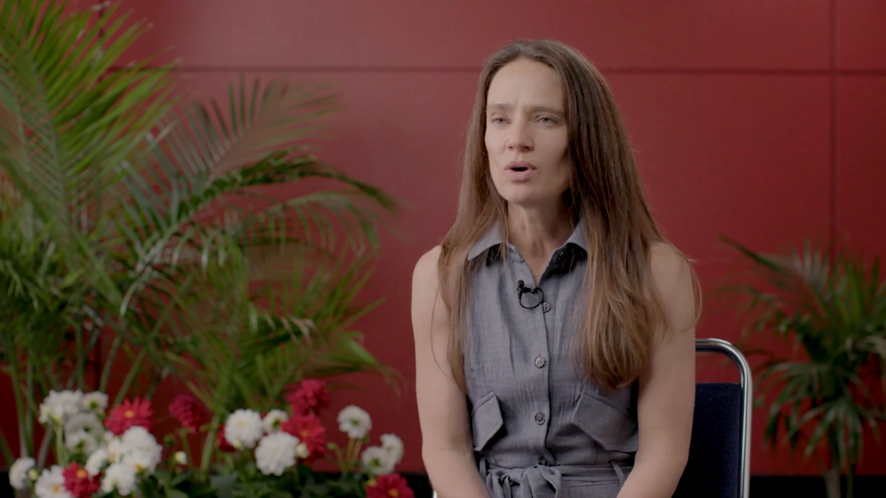
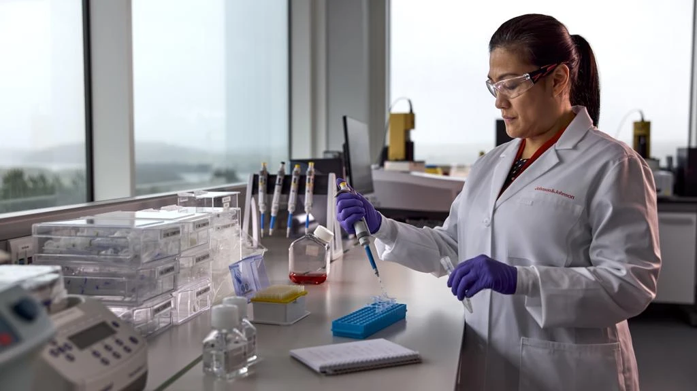
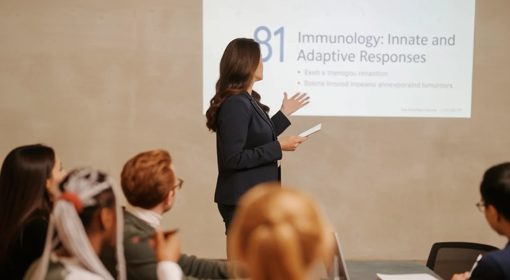

About
The immune system is endlessly fascinating, and my job is to inspire you to think so too.
Years as an educator, scientist & communicator
Courses taught
Talks given
Outreach, teaching, and public conversation, all aimed at making the immune system easier to understand.
Hands-on science outreach for elementary and middle-school kids, alongside volunteer scientists at CU Anschutz.

Uses her expertise as an immunologist to break down the science of the immune system for anyone who comes across her page.

Mentors PhD students and postdocs on curriculum, teaching, and assessment to ensure lasting training benefits.

Unbiased Science Podcast · April 2025. A recent conversation on autoimmune disease, unpacked for a general audience.
CHA/PA “Guest Lecture” Teaching Award
Chancellor’s Teaching Recognition Award
S.T.A.R.ling Outstanding Faculty Teaching Award
S.T.A.R. Outstanding Faculty Teaching Award
Non-Tenure Faculty Teaching Award
Non-Tenure Faculty Teaching Award